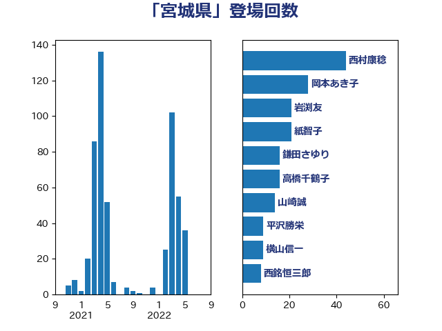

単語「宮城県」

| 西村康稔 | 自由民主党 | 44 回 |
| 岡本あき子 | 立憲民主党 | 28 回 |
| 岩渕友 | 日本共産党 | 21 回 |
| 紙智子 | 日本共産党 | 21 回 |
| 鎌田さゆり | 立憲民主党 | 16 回 |
| 高橋千鶴子 | 日本共産党 | 16 回 |
| 山崎誠 | 立憲民主党 | 14 回 |
| 平沢勝栄 | 自由民主党 | 9 回 |
| 横山信一 | 公明党 | 9 回 |
| 西銘恒三郎 | 自由民主党 | 8 回 |
| 和田政宗 | 自由民主党 | 7 回 |
| 早坂敦 | 日本維新の会 | 7 回 |
| 東徹 | 日本維新の会 | 7 回 |
| 梶山弘志 | 自由民主党 | 6 回 |
| 石井正弘 | 自由民主党 | 6 回 |
| 赤羽一嘉 | 公明党 | 6 回 |
| 田村貴昭 | 日本共産党 | 5 回 |
| 石垣のりこ | 立憲民主党 | 5 回 |
| 芳賀道也 | 国民民主党 | 5 回 |
| 大口善徳 | 公明党 | 4 回 |
| 宮本徹 | 日本共産党 | 4 回 |
| 小沢雅仁 | 立憲民主党 | 4 回 |
| 平木大作 | 公明党 | 4 回 |
| 熊谷裕人 | 立憲民主党 | 4 回 |
| 赤澤亮正 | 自由民主党 | 4 回 |
| 佐藤英道 | 公明党 | 3 回 |
| 古屋範子 | 公明党 | 3 回 |
| 小泉進次郎 | 自由民主党 | 3 回 |
| 庄子賢一 | 公明党 | 3 回 |
| 後藤茂之 | 自由民主党 | 3 回 |
| 末松信介 | 自由民主党 | 3 回 |
| 江島潔 | 自由民主党 | 3 回 |
| 田村憲久 | 自由民主党 | 3 回 |
| 舩後靖彦 | れいわ新選組 | 3 回 |
| 道下大樹 | 立憲民主党 | 3 回 |
| こやり隆史 | 自由民主党 | 2 回 |
| 丸川珠代 | 自由民主党 | 2 回 |
| 井上英孝 | 日本維新の会 | 2 回 |
| 伊藤信太郎 | 自由民主党 | 2 回 |
| 伊藤渉 | 公明党 | 2 回 |
| 佐々木さやか | 公明党 | 2 回 |
| 加藤勝信 | 自由民主党 | 2 回 |
| 坂本哲志 | 自由民主党 | 2 回 |
| 宮本周司 | 自由民主党 | 2 回 |
| 山井和則 | 立憲民主党 | 2 回 |
| 岸田文雄 | 自由民主党 | 2 回 |
| 岸真紀子 | 立憲民主党 | 2 回 |
| 川田龍平 | 立憲民主党 | 2 回 |
| 斉藤鉄夫 | 公明党 | 2 回 |
| 杉尾秀哉 | 立憲民主党 | 2 回 |
| 横沢高徳 | 立憲民主党 | 2 回 |
| 橋本岳 | 自由民主党 | 2 回 |
| 清水貴之 | 日本維新の会 | 2 回 |
| 片山大介 | 日本維新の会 | 2 回 |
| 秋葉賢也 | 自由民主党 | 2 回 |
| 若松謙維 | 公明党 | 2 回 |
| 菅義偉 | 自由民主党 | 2 回 |
| 藤原崇 | 自由民主党 | 2 回 |
| 野上浩太郎 | 自由民主党 | 2 回 |
| 野田聖子 | 自由民主党 | 2 回 |
| 野間健 | 立憲民主党 | 2 回 |
| 長友慎治 | 国民民主党 | 2 回 |
| 階猛 | 立憲民主党 | 2 回 |
| 鰐淵洋子 | 公明党 | 2 回 |
| 上杉謙太郎 | 自由民主党 | 1 回 |
| 中川宏昌 | 公明党 | 1 回 |
| 中野洋昌 | 公明党 | 1 回 |
| 今井絵理子 | 自由民主党 | 1 回 |
| 倉林明子 | 日本共産党 | 1 回 |
| 冨樫博之 | 自由民主党 | 1 回 |
| 古川俊治 | 自由民主党 | 1 回 |
| 吉川ゆうみ | 自由民主党 | 1 回 |
| 吉田忠智 | 立憲民主党 | 1 回 |
| 吉田統彦 | 立憲民主党 | 1 回 |
| 和田義明 | 自由民主党 | 1 回 |
| 堀井巌 | 自由民主党 | 1 回 |
| 塩川鉄也 | 日本共産党 | 1 回 |
| 宗清皇一 | 自由民主党 | 1 回 |
| 寺田静 | 無所属 | 1 回 |
| 小野田紀美 | 自由民主党 | 1 回 |
| 山添拓 | 日本共産党 | 1 回 |
| 岡本三成 | 公明党 | 1 回 |
| 岩本剛人 | 自由民主党 | 1 回 |
| 島村大 | 自由民主党 | 1 回 |
| 徳永エリ | 立憲民主党 | 1 回 |
| 有村治子 | 自由民主党 | 1 回 |
| 木村英子 | れいわ新選組 | 1 回 |
| 本田太郎 | 自由民主党 | 1 回 |
| 杉久武 | 公明党 | 1 回 |
| 村井英樹 | 自由民主党 | 1 回 |
| 梅村みずほ | 日本維新の会 | 1 回 |
| 森山浩行 | 立憲民主党 | 1 回 |
| 武田良太 | 自由民主党 | 1 回 |
| 比嘉奈津美 | 自由民主党 | 1 回 |
| 泉田裕彦 | 自由民主党 | 1 回 |
| 牧島かれん | 自由民主党 | 1 回 |
| 玄葉光一郎 | 立憲民主党 | 1 回 |
| 玉木雄一郎 | 国民民主党 | 1 回 |
| 田中英之 | 自由民主党 | 1 回 |
| 田村まみ | 国民民主党 | 1 回 |
| 神田潤一 | 自由民主党 | 1 回 |
| 神谷裕 | 立憲民主党 | 1 回 |
| 福島伸享 | 無所属 | 1 回 |
| 穀田恵二 | 日本共産党 | 1 回 |
| 笠井亮 | 日本共産党 | 1 回 |
| 羽田次郎 | 立憲民主党 | 1 回 |
| 自見はなこ | 自由民主党 | 1 回 |
| 足立敏之 | 自由民主党 | 1 回 |
| 近藤和也 | 立憲民主党 | 1 回 |
| 進藤金日子 | 自由民主党 | 1 回 |
| 酒井庸行 | 自由民主党 | 1 回 |
| 里見隆治 | 公明党 | 1 回 |
| 野中厚 | 自由民主党 | 1 回 |
| 金子恵美 | 立憲民主党 | 1 回 |
| 長妻昭 | 立憲民主党 | 1 回 |
| 須藤元気 | 無所属 | 1 回 |